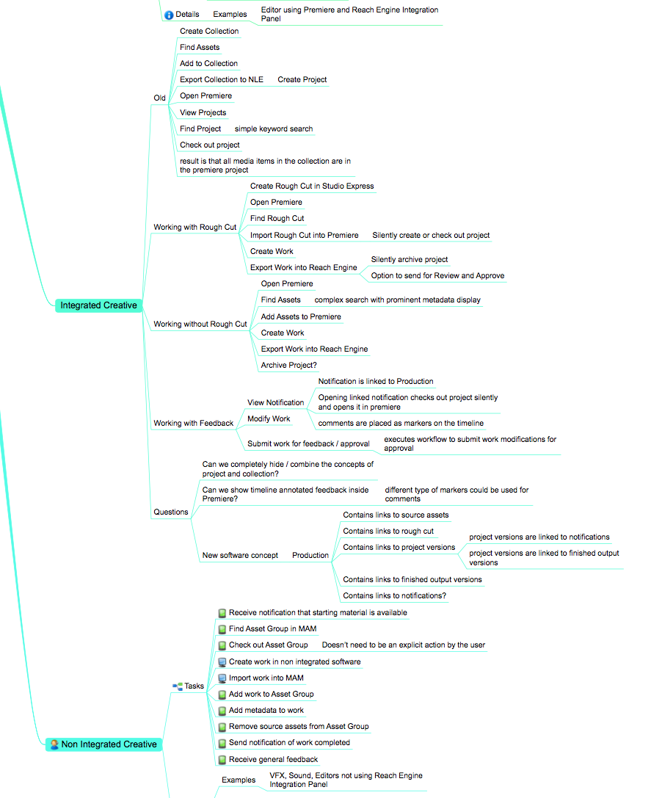
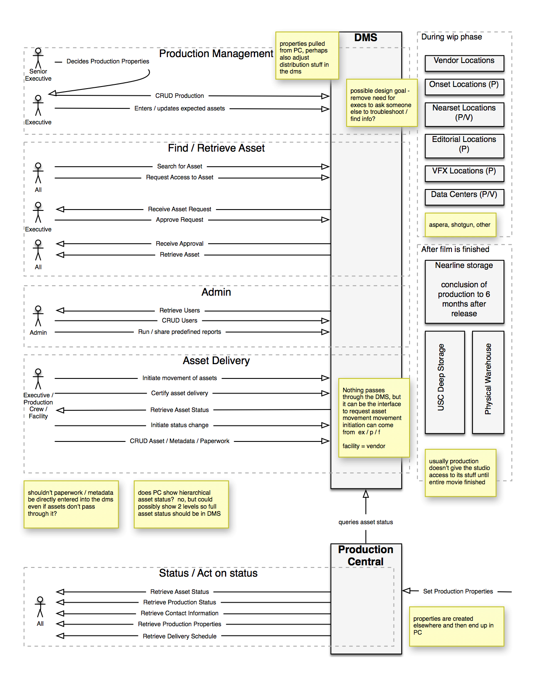
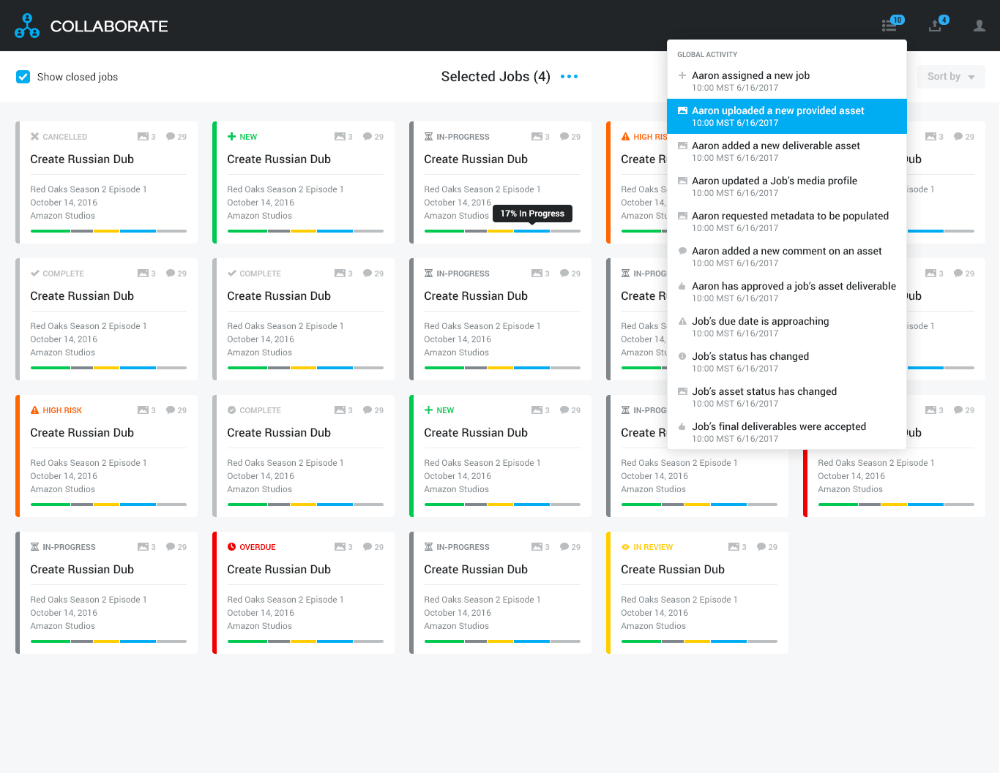

Overview
While I have experience creating a wide variety of UX Artifacts, I am generally not a fan of documentation as a means of knowledge transfer except at specific boundaries. Where available I prefer high bandwidth communication for knowledge transfer. In that spirit, the list of artifacts generated on each project varies depending on the needs and circumstances of the project. Here is a general process that I follow on UX projects.
Discovery
My first exposure to projects is generally the business stakeholders who fund the product or interface that the users interact with. Frequently these stakeholders are also subject matter experts and help me get a lay of the land for the project. During this initial discovery I gain an understanding of the space that the interface will compete in, roughly who the users and key tasks are, what the stakeholder interests in the interface are, and what metrics will be used to determine the success of the project. I create a user model at the appropriate level of detail and begin interviewing users to iterate, improve the model, and identify pain points. I detail out any high risk interactions and create use cases at the appropriate level of detail, from brief to fully dressed.

Sample User Model
(not use case level detail)
{kind=link}

Sample Sequence Diagram
{kind=link}
Creation
The first interface iterations happen in low fidelity, focusing on the main or highest risk interactions. As the iterations proceed, the fidelity can increase as the specifics of each remaining user interaction are fleshed out. A user centric domain model is available at this point for Engineering if desired and appropriate. I can approve and integrate creative into higher fidelity wireframe templates to quickly crank out artifacts that can double as comps. Depending on the nature of the project, I can run the first few iterations past the experts, or I can iterate directly with users.

Sample Low Fidelity Wireframe

Sample High Fidelity Wireframe
{kind=link}
Delivery
As a UX team member, I take pride in creating deliverables that solve problems in elegant ways and meet the specifications I'm given to fulfill. If I am in a UX team lead role, I pay particular attention to the interfaces with Engineering and Product Management.
Engineering usually has their processes and stack in place already. I meet with leads around kickoff and do my best to create deliverable specifications that minimize unnecessary work for both UX and Engineering. This might mean delivering styles in pseudo-css or creating a UX Wiki that can be linked to directly from JIRAs so that the stories always connect to the latest UX specifications and metaphors. These kinds of stories are lightweight and weather sprint rescheduling very well.
If I'm interfacing with an Agile Product Management department I can deliver the interface in Epic form. If I am wearing a Product Owner hat, I can decompose the Epic into Stories and prioritize them in the Backlog.
I can work with Creative Directors or Designers to create a consistent design language and interaction model so that Engineering can easily find anything from the standard drop shadows on control popups to detailed specifications on how notifications work. I tend to be the person who can tell you how many different metaphors for the same interaction are present across a suite of products and why each difference is there.
Ultimately the success of a feature or product depends on both the users and stakeholders being satisfied. If desired, I can insert UX signoff as a pull request step to ensure nothing falls through the cracks while the Engineering / UX interface is being developed. I am a proponent of QA placing themselves in the role of the user during their testing. Heck, I'm a proponent of everyone putting themselves in the role of the user to validate designs and suggest improvements!
Please feel free to contact me to explore a fit with your organization or project.